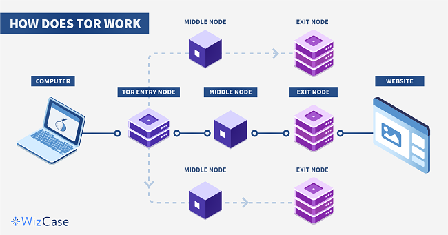

Tor, short for The Onion Router, is free and open-source software for enabling anonymous communication. It directs Internet traffic through a free, worldwide, volunteer overlay network, consisting of more than six thousand relays, for concealing a user's location and usage from anyone conducting network surveillance or traffic analysis. Using Tor makes it more difficult to trace the Internet activity to the user. Tor's intended use is to protect the personal privacy of its users, as well as their freedom and ability to conduct confidential communication by keeping their Internet activities unmonitored.
The core principle of Tor, Onion routing, was developed in the mid-1990s by United States Naval Research Laboratory employees, mathematician Paul Syverson, and computer scientists Michael G. Reed and David Goldschlag, to protect U.S. intelligence communications online. Onion routing is implemented by encryption in the application layer of the communication protocol stack, nested like the layers of an onion. The alpha version of Tor, developed by Syverson and computer scientists Roger Dingledine and Nick Mathewson and then called The Onion Routing project (which later simply became "Tor", as an acronym for the former name), was launched on 20 September 2002. The first public release occurred a year later.
In 2004, the Naval Research Laboratory released the code for Tor under a free license, and the Electronic Frontier Foundation (EFF) began funding Dingledine and Mathewson to continue its development. In 2006, Dingledine, Mathewson, and five others founded The Tor Project, a Massachusetts-based 501(c)(3) research-education nonprofit organization responsible for maintaining Tor. The EFF acted as The Tor Project's fiscal sponsor in its early years, and early financial supporters of The Tor Project included the U.S. Bureau of Democracy, Human Rights, and Labor and International Broadcasting Bureau, Internews, Human Rights Watch, the University of Cambridge, Google, and Netherlands-based Stichting NLnet.
Tor enables its users to surf the Internet, chat and send instant messages anonymously, and is used by a wide variety of people for both licit and illicit purposes. Tor has, for example, been used by criminal enterprises, hacktivism groups, and law enforcement agencies at cross purposes, sometimes simultaneously; likewise, agencies within the U.S. government variously fund Tor (the U.S. State Department, the National Science Foundation, and – through the Broadcasting Board of Governors, which itself partially funded Tor until October 2012 – Radio Free Asia) and seek to subvert it.
Tor is not meant to completely solve the issue of anonymity on the web. Tor is not designed to completely erase tracks but instead to reduce the likelihood for sites to trace actions and data back to the user.
Tor is also used for illegal activities. These can include privacy protection or censorship circumvention, as well as distribution of child abuse content, drug sales, or malware distribution. According to one estimate, "overall, on an average country/day, ∼6.7% of Tor network users connect to Onion/Hidden Services that are disproportionately used for illicit purposes."
Tor has been described by The Economist, in relation to Bitcoin and Silk Road, as being "a dark corner of the web". It has been targeted by the American National Security Agency and the British GCHQ signals intelligence agencies, albeit with marginal success, and more successfully by the British National Crime Agency in its Operation Notarise. At the same time, GCHQ has been using a tool named "Shadowcat" for "end-to-end encrypted access to VPS over SSH using the Tor network". Tor can be used for anonymous defamation, unauthorized news leaks of sensitive information, copyright infringement, distribution of illegal sexual content, selling controlled substances, weapons, and stolen credit card numbers, money laundering, bank fraud, credit card fraud, identity theft and the exchange of counterfeit currency; the black market utilizes the Tor infrastructure, at least in part, in conjunction with Bitcoin. It has also been used to brick IoT devices.